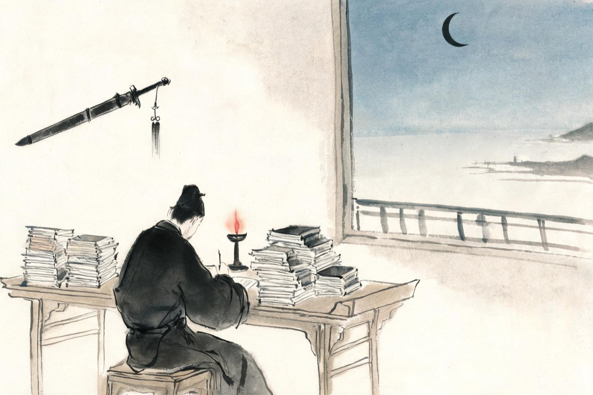
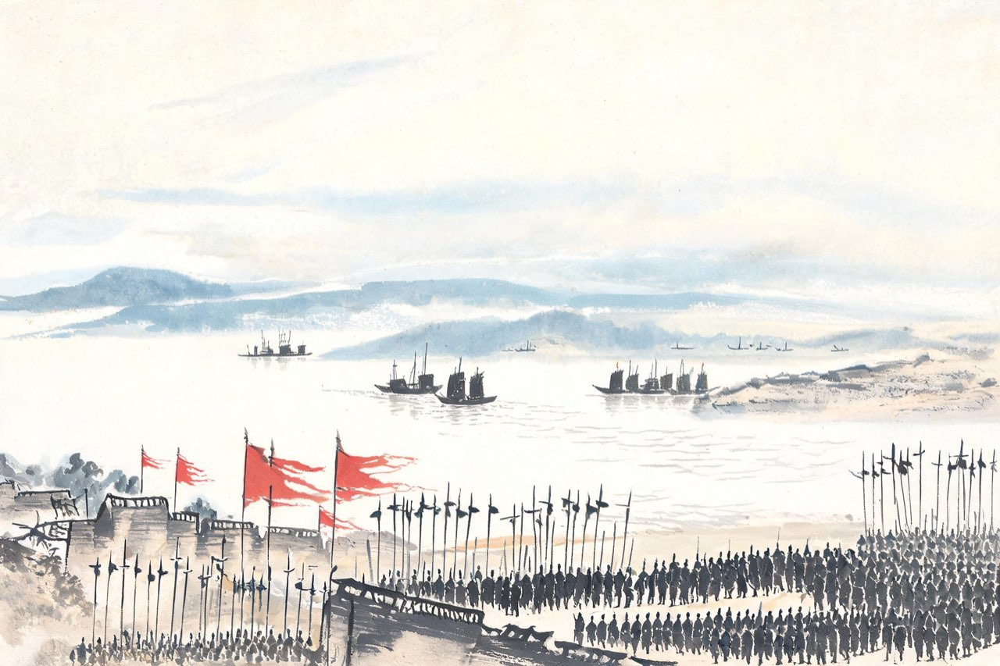

辛弃疾 · 1162-1180
南渡
能臣的钝痛
江阴签判
五十骑的名声传遍江南，朝廷给你的第一个官职，是江阴签判。
签判，签书节度判官厅公事——州府里的文书官，批阅案牍，签署公文。这年你二十三岁，职务与你的名声、与你自许的方向，都隔着一整个江湖：北岸金人虎视，行在君臣言和，而你在江阴的官署里，核对钱粮文书。
剑挂在壁上，渐渐蒙尘。你是从五万军中生擒叛将回来的人，如今每天面对的，是漕运账目和讼狱卷宗。
你没有荒废这份小官。核钱粮、平讼狱，一样一样做扎实——治郡之才，就是从这些文书里长出来的。只是夜深人静，你偶尔会想起北方：沦陷的故乡，溃散的旧部，还有那张越来越远的战场。
注
- 「仍授前官，改江阴佥判」——《宋史》本传，时年二十三（虚岁）
- 签判日常公务内容：据宋代幕职官职掌概括，演绎，待校
- 签判全称：所据为「签书节度判官厅公事」，江阴为军而非节度州，或应作「签书判官厅公事」，待校

美芹十论
小官的案牍磨不平你。江阴任上，你把两次北行看来的金国虚实、义军里的所见所历、这几年琢磨的攻守大计，一笔一笔写成了一部兵书，上于朝廷。
十论：审势、察情、观衅、自治、守淮、屯田、致勇、防微、久任、详战——从敌我形势到屯田练兵，从沿边守御到进取方略，一部恢复中原的完整草案。落笔的人，是个二十出头的签判。
朝廷的回应很体面：诏付有司看详，嘉奖了几句。
没有人否认书写得好。只是主和是朝廷的大气候，一部兵书改变不了庙算。你在江阴的灯下写它的时候就知道——但你还是写了。位卑未敢忘忧国，这六个字，你用一部十论写在了前头。
芹是谦辞：野人献芹，聊表心意。这份心意，此后许多年还常常被想起，也常常只被想起。
注
- 系年：《宋史》本传记于乾道六年（1170）与《九议》并提；邓谱及主流研究系于隆兴、乾道之际（约1163-1165）江阴任上——今从邓谱，待校
- 十论篇目：审势、察情、观衅、自治、守淮、屯田、致勇、防微、久任、详战——原文篇目
- 朝廷回应细节（诏付有司看详、嘉奖），待校
- 「位卑未敢忘忧国」：陆游《病起书怀》句（淳熙三年，1176），用于此为化典，非辛语
延和殿
乾道六年，你被孝宗皇帝召对延和殿。
殿上你论南北形势、攻守之计，言无顾忌。史书后来记下八个字：持论劲直，不为迎合。皇帝没有动怒，反而记住了这个说话不打折扣的北方人。
召对之后，你把胸中方略又写成《九议》，献给宰相虞允文——采石大捷的主帅，朝中最主战的重臣。九议论敌我长短、攻守缓急，比十论更进一层。你甚至立了军令状般的字据：方略若误，甘当军法。
虞允文读了，称善，把它压在了案头。主战的老宰相有主战老宰相的难处：北伐的银子、马匹、人心，哪一样都不是一篇九议能变出来的。
十论上过了，九议献过了，召对也过了。你发现了一个规律：每一次进言都得到嘉许，每一次嘉许之后，一切照旧。朝廷养着你这样的人才，像把一柄好剑供在架上——好看，拔出来的日子却总也不来。
注
- 「持论劲直，不为迎合」——《宋史》本传记延和殿召对语，系乾道六年（1170）召对之评
- 《九议》上虞允文：本传及邓谱系乾道六年；《宋史》将《美芹十论》与《九议》并系于此年——两说并存，今从邓谱系于乾道六年，待校
- 「立军令状般字据」：《九议》原序有「较其得失」自任之语，演绎，待校
- 虞允文时任宰相、主战派：乾道六年为右丞相（乾道五年八月拜右仆射、同中书门下平章事，乾道八年改左），待校
乾道八年，你终于等来了一个州——滁州，两淮之间的边地小郡，连年兵燹之后，城郭残破，编户凋零。你宽征薄赋、招抚流散、教练民兵，一年之间，滁州商旅渐集，气象更新。你在州城筑起一座楼，取名奠枕——奠是安定，枕是安眠。登楼那天，你写下一首《声声慢》——
声声慢·滁州旅次登奠枕楼作，和李清宇韵
〔词题四卷本甲集作「旅次登楼作」，《花庵词选》作「滁州作，登奠枕楼」。此处节录上片；下片自「千古怀嵩人去」起，怀想前贤、自笑身留，结于「华胥梦，愿年年、人似旧游」。〕
征埃成阵，行客相逢，都道幻出层楼。
指点檐牙高处，浪拥云浮。
今年太平万里，罢长淮、千骑临秋。
凭栏望，有东南佳气，西北神州。
注
- 「和李清宇韵」：李清宇，滁州新识之士，唱和之友；词题诸本或作「登楼作」或作「登奠枕楼作」
- 奠枕楼：辛弃疾知滁州所建，于繁雄馆上加层而成；奠枕＝安枕，取淮右安定、可高枕之意；宽征薄赋、招流散、教民兵为治滁实政，本传及地方志有载
- 「罢长淮、千骑临秋」：长淮罢警备、千骑临秋阅——此为通行解释，待校
- 系年乾道八年（1172）从邓笺
滁州三年任满，你以江东安抚司参议官的身份再回建康。又是一个中秋。酒阑人散，你独对月色，把一腔不合时宜，问向月中人——
太常引·建康中秋夜为吕叔潜赋
一轮秋影转金波，飞镜又重磨。
把酒问姮娥：被白发、欺人奈何。
乘风好去，长空万里，直下看山河。
斫去桂婆娑，人道是、清光更多。
注
- 吕叔潜：名大虬，吕好问之孙、吕祖谦诸父，与辛弃疾声气相应
- 「姮娥」一作「嫦娥」，异文待校
- 斫桂：用吴刚伐桂及段成式故事意——婆娑桂影遮月，斫去则清光更多，喻扫除蔽障、还我河山
- 系年淳熙元年（1174）从邓笺；一说作于乾道建康通判期（1168-1170），待校
- 「滁州三年任满」：知滁州为乾道八年至淳熙元年，约两年；「三年」按跨年头计，待校
同一个秋天，你登上城西的赏心亭。建康形胜，尽收眼底：楚天千里，长江东去。落日、孤雁、遥山——江南的秋色这样好，你心里却全是北边。栏杆拍遍，无人会——
水龙吟·登建康赏心亭
楚天千里清秋，水随天去秋无际。
遥岑远目，献愁供恨，玉簪螺髻。
落日楼头，断鸿声里，江南游子。
把吴钩看了，栏杆拍遍，无人会，登临意。
休说鲈鱼堪脍，尽西风，季鹰归未？
求田问舍，怕应羞见，刘郎才气。
可惜流年，忧愁风雨，树犹如此！
倩何人唤取，红巾翠袖，揾英雄泪？
注
- 系年：邓笺编于淳熙元年（1174）建康；一说作于乾道四年至六年建康通判任上（1168-1170）——今从邓笺，待校
- 季鹰：张翰字季鹰，吴人，见秋风起思鲈鱼而弃官归乡——「归未」者，故乡沦陷，欲归无所归也
- 求田问舍：刘备讥许汜为国士而只知买田置舍，「怕应羞见，刘郎才气」用此典
- 树犹如此：桓温北征见昔种柳树皆十围，慨「木犹如此，人何以堪」——叹流年
淳熙二年，茶商军起于湖北，转战湖南、江西。你临危受命，任江西提点刑狱，提兵平乱——三个月，事平。公务之余，你巡历州县，走到赣江上游的造口。郁孤台下的江水向北流去，四十余年前，隆祐太后被金兵追到这里——你提起笔，把胸中块垒写进壁上——
菩萨蛮·书江西造口壁
郁孤台下清江水，中间多少行人泪。
西北望长安，可怜无数山。
青山遮不住，毕竟东流去。
江晚正愁余，山深闻鹧鸪。
注
- 造口：一名皂口，在今江西万安县西南六十里——题壁之地在万安，非赣州；郁孤台则在赣州（词句首句怀想之地），两地一江相连
- 提刑司驻赣州，巡历至造口：行程为合理推定，待校
- 隆祐太后（哲宗孟皇后）建炎年间被金兵追至造口、舍舟陆行：造口书壁之本事背景，从罗大经《鹤林玉露》说，学界有异说，待校
- 平茶商军赖文政：淳熙二年六月至九月，从邓谱；词系淳熙三年（1176），场景即此年
淳熙六年，你由湖北转运副使调任湖南，主管一路财赋漕运。同僚王正之在小山亭设酒送行。春将尽，落红无数；酒过三巡，你把满腹不合时宜，写成宋词里最沉痛的一首春怨——
摸鱼儿·更能消几番风雨
淳熙己亥，自湖北漕移湖南，同官王正之置酒小山亭，为赋。
更能消、几番风雨，匆匆春又归去。
惜春长怕花开早，何况落红无数。
春且住，见说道、天涯芳草无归路。
怨春不语。
算只有殷勤，画檐蛛网，尽日惹飞絮。
长门事，准拟佳期又误。
蛾眉曾有人妒。
千金纵买相如赋，脉脉此情谁诉？
君莫舞，君不见、玉环飞燕皆尘土！
闲愁最苦！
休去倚危栏，斜阳正在，烟柳断肠处。
注
- 词序原文：「淳熙己亥，自湖北漕移湖南，同官王正之置酒小山亭，为赋」
- 王正之：名正己，字正之（名与字待校），时为湖北漕司属官；小山亭在鄂州（今武汉）漕司
- 长门事、玉环飞燕：陈皇后贬长门、以千金买司马相如赋；杨玉环、赵飞燕恃宠而终尘土——皆以宫怨寓政治
- 「斜阳正在，烟柳断肠处」为通行句读；一说断作「斜阳正在烟柳，断肠处」，待校

飞虎军
到湖南不久，同年秋你改知潭州，兼湖南安抚使——一路帅臣，终于有了实权。
你要抓的头一件事，是练一支可用的兵。湖南接连用兵、盗匪不靖，而地方军备废弛。你奏请创建飞虎军：营栅、军械、战马、粮饷，事事亲自过手。经费不足，你先动用榷酒收入；有人构陷你聚敛，朝廷降金牌叫停——你把金牌藏起来，限期赶完营栅，再上疏陈明本末，并绘营栅图进呈。
飞虎军成军：雄镇一方，为江上诸军之冠。金人后来提起这支军，称之为虎儿军，甚为惮之。
这是你在地方任上干成的最大一件事。练兵的钱花得如流水，弹章也在朝廷里积成了堆——用钱如泥沙，杀人如草芥，台臣的这两句考语，你日后还会再听到。
雄镇一方的军功，和积毁销骨的弹章，是同一件事的两面。这一年，你四十一岁。
注
- 「雄镇一方，为江上诸军之冠」——《宋史》本传原文
- 「用钱如泥沙，杀人如草芥」——台臣弹章语，见《宋史》本传；本传系此语于福建任被劾时，与淳熙八年（1181）之罢或非一事，待核
- 藏金牌事：《宋史》本传记其藏起金牌、限期一月建成营栅、绘图缴进后孝宗释然
- 「虎儿军」之名金人称之：出宋人记载，待校
- 榷酒收入筹饷：据邓谱及宋人记述概括，待校